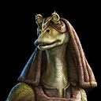
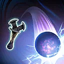
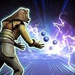
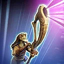

Gungan Boomadier
Gungan Boomadier's swift attacks are most amplified when capitalizing on debuffed enemies and gains impressive bonuses while the Shield Generator is active.

Gungan Boomadier's swift attacks are most amplified when capitalizing on debuffed enemies and gains impressive bonuses while the Shield Generator is active.

Deal Physical damage to target enemy, this damage is tripled if the enemy is Shocked. Gain Speed Up for 1 turn.

Deal Physical damage to target enemy. Deal an additional instance of damage for each Offense Down, Defense Down, Healing Immunity, and Speed Down present on target enemy (max 5). Always deal 5 instances of damage to Separatist enemies. Remove 1 stack of Recharge from the ally Shield Generator per instance of damage.

Deal Physical damage to all enemies and inflict Ability Block on them for 1 turn. Separatist enemies are inflicted with Protection Disruption, which can't be copied, dispelled, or resisted for 2 turns. Remove 3 stacks of Recharge from allied Shield Generator and it gains 2 stacks of Plasma Shielding. Swap Turn Meter with target other Gungan ally, and Boomadier gains Frenzy for 1 turn. Target other Gungan ally gains Accuracy Up for 2 turns.
At the start of battle, Gungan Boomadier loses 75% Max Health and gains that much Max Protection.
Gungan Boomadier has +30% Defense Penetration and Offense.
While an allied Shield Generator is active:
- Enemies defeated by Gungan Attackers can't be revived
- Whenever Gungan Boomadier uses a Special ability, gain 5% Defense Penetration and Offense (stacking, persists through defeat) for the rest of battle
- While a Gungan ally has Retribution, they are immune to Target Lock
Omicron Boost : While in certain Raids: Shield Generator allies gain 10 stacks of Plasma Shielding and when Gungan Boomadier uses Horn of Otoh Gunga, it gains an additional 2 stacks of Plasma Shielding.
While an allied Shield Generator is active, when any allied Gungan uses a Special ability, all Gungan allies gain 2% Defense Penetration and Offense (stacking, persists through defeat) for the rest of battle and 1 stack of Recharge is removed from the ally Shield Generator.